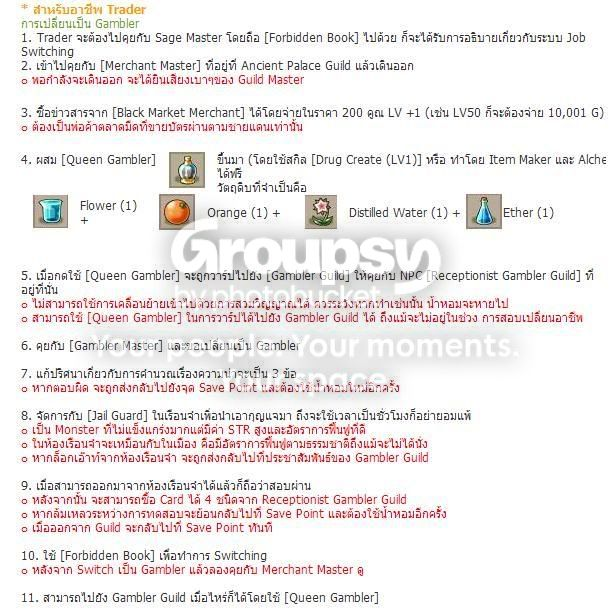

COMPLETE GUIDE---Job switching last update 9/7/10
 โดย ECO » เสาร์ 07 มิ.ย. 2008 12:11 pm
โดย ECO » เสาร์ 07 มิ.ย. 2008 12:11 pm
:oops: สำหรับอาชีพ Trader ที่ต้องการ Switch Job ไปเป็นอาชีพ Gambler นั้น
ขั้นตอนการ Switch จะพิเศษกว่าอาชีพอื่นๆ ดังนี้ค่ะ
:arrow: อ่านข้อมูลเพิ่มเติม ได้ที่นี่ค่ะ
ขั้นตอนการ Switch จะพิเศษกว่าอาชีพอื่นๆ ดังนี้ค่ะ


:arrow: อ่านข้อมูลเพิ่มเติม ได้ที่นี่ค่ะ
- ECO
- Dark Warrior

- โพสต์: 276285
- ลงทะเบียนเมื่อ: พุธ 26 ต.ค. 2011 9:31 pm
 โดย ECO » พฤหัสฯ. 16 ต.ค. 2008 6:08 pm
โดย ECO » พฤหัสฯ. 16 ต.ค. 2008 6:08 pm
ถ้าสวิทไป สวิทกลับ ต้องทำเหมือนเดิมใช่ป่ะ
สวิทกลับทำเหมือนสวิทไปใช่ป่ะคับ
------------------------------------------------------------
ขอถามอีกข้อ ที่โอนสกิลอ่ะคับ เอ้า เวลาสวิทไป จากคราส 2ไปคราส 3 สกิล คราส2มันจะหายไปหรอ มันจะหายไปหรอคับ - -* บอกหน่อยคับ ผมงง
งั้นสวิทกลับ จากคราส 3 ไปคราส 2 ก็ต้อง อยากได้ 2สกิลกลับ ก็เอาจ็อบคราส3 เวล 20 นะสิ - -* ใช่ไหมคับ
งง ไปหมดแล้วคับ มาตอบทีผมใกล้จะสวิทแว้ว กลัวสวิทแล้วล่ม - -*
สวิทกลับทำเหมือนสวิทไปใช่ป่ะคับ
------------------------------------------------------------
ขอถามอีกข้อ ที่โอนสกิลอ่ะคับ เอ้า เวลาสวิทไป จากคราส 2ไปคราส 3 สกิล คราส2มันจะหายไปหรอ มันจะหายไปหรอคับ - -* บอกหน่อยคับ ผมงง
งั้นสวิทกลับ จากคราส 3 ไปคราส 2 ก็ต้อง อยากได้ 2สกิลกลับ ก็เอาจ็อบคราส3 เวล 20 นะสิ - -* ใช่ไหมคับ
งง ไปหมดแล้วคับ มาตอบทีผมใกล้จะสวิทแว้ว กลัวสวิทแล้วล่ม - -*
- ECO
- Dark Warrior
- โพสต์: 276285
- ลงทะเบียนเมื่อ: พุธ 26 ต.ค. 2011 9:31 pm
ผู้ใช้งานขณะนี้
่กำลังดูบอร์ดนี้: ไม่มีสมาชิก และ บุคคลทั่วไป 1 ท่าน